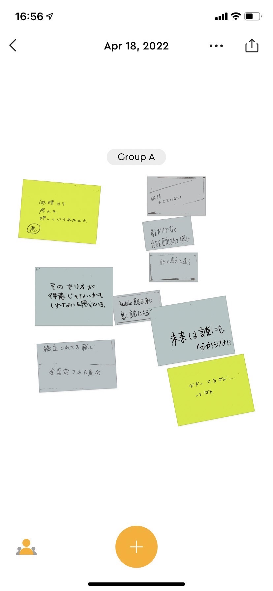

デザイン演習Ⅲ・Ⅳ assignment 第二回
光を操る
Neopixelを使う
配線
>NeoPixelの+5V(赤）はArduinoの5V
NeoPixelのDin（黄）はArduinoの9番ピン(470Ω程度の抵抗を入れる)
NeoPixelのGND（黒）はArduinoのGNDにつなげる
おこなったプログラミング
- #include <Adafruit_NeoPixel.h>
- #define PIN 9 //Arduinoで使うピン
- #define NUMPIXELS 5//LEDの数。
- int brightness=10;//明るさ
- int red_value=0;//赤要素
- int red_target=0;//赤要素の変化_目標値
- int green_value=0;//緑要素
- int green_target=0;//緑要素の変化_目標値
- int blue_value=0;//青要素
- int blue_target=0;//青要素の変化_目標値
- boolean disp=true;
- Adafruit_NeoPixel pixels = Adafruit_NeoPixel(NUMPIXELS, PIN, NEO_GRB + NEO_KHZ800);
- void setup()
- {
- pixels.begin(); // NeoPixel出力ピンの初期化
- pixels.setBrightness(brightness);
- pinMode(PIN,OUTPUT);
- red_value=255;
- red_target=random(0,255);
- green_value=0;
- green_target=random(0,255);
- blue_value=180;
- blue_target=random(0,255);
- for(int i=0; i < NUMPIXELS; i++){
- pixels.setPixelColor(i,pixels.Color(red_value,green_value,blue_value));
- }
- pixels.show();
- }
- void loop(){
- if (disp==true){
- // 赤要素の変化 -----------------------
- if (red_target>red_value){
- //目標値より値が小さかったら、値を増やす
- red_value++;
- }else if(red_target<red_value){
- //目標値より値が大きかったら、値を減らす
- red_value--;
- }else if(red_target==red_value){
- red_value=red_target;
- //目標値になったら、目標値を再設定
- red_target=random(0,255);
- }
- //緑要素の変化------------------------
- if (green_target>green_value){
- green_value++;
- }else if(green_target<green_value){
- green_value--;
- }else if(green_target==green_value){
- green_value=green_target;
- green_target=random(0,255);
- }
- //青要素------------------------
- if (blue_target>blue_value){
- blue_value++;
- }else if(blue_target<blue_value){
- blue_value--;
- }else if(blue_target==blue_value){
- blue_value=blue_target;
- blue_target=random(0,255);
- }
- for(int i=0; i < NUMPIXELS; i++){
- pixels.setPixelColor(i,pixels.Color(red_value,green_value,blue_value));
- }
- pixels.show();
- delay(50);
- }
- }
グループワーク
天気の良い時のPOV
天気の良い時に嬉しくなるなどの意見が出てきた。
服を選ぶ時のPOV
服を選ぶ時に嫌な気持ちになるようだ。
決め付けられた時のPOV

先輩などに一方的に意見を通されると嫌な気持ちになるようだ。
自分で考察したPOV